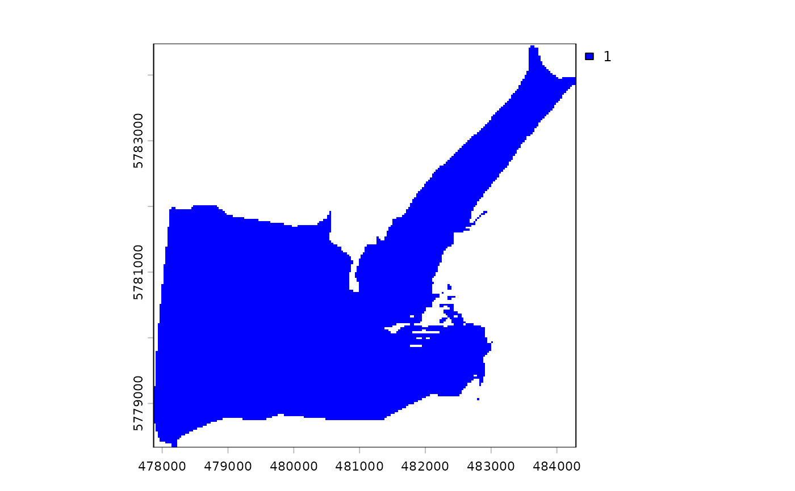
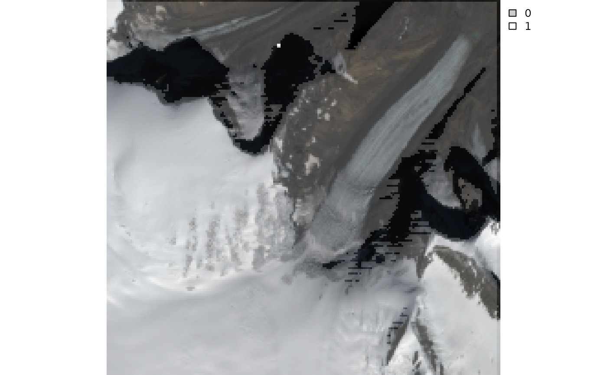

Detects and removes self-shadowed pixels (i.e., pixels having
aspect angles oriented away from the sun) and cast shadows (i.e,
pixels facing towards the direction of the sun but where sunlight
is blocked by neighbor topographic features such as mountains).
Self-shadowed pixels are detected when the angle between the sun
and the vector normal to the grid cell's surface is higher than
\(\frac{\pi}{2}\). Cast shadows are calculated using the
cast_shadows() function.
Examples
library(terra)
dem <- system.file("extdata/athabasca_dem.tif", package = "SatRbedo")
dem <- terra::rast(dem)
SZA <- 49
SAA <- 165
msk <- shadow_removal(dem, SZA, SAA, mask = TRUE)
plot(msk, col = "blue")

# Overlay an RGB composite with the shadow masks
blue <- terra::rast(system.file("extdata/athabasca_B02_20200911.tif", package = "SatRbedo"))
green <- terra::rast(system.file("extdata/athabasca_B03_20200911.tif", package = "SatRbedo"))
red <- terra::rast(system.file("extdata/athabasca_B04_20200911.tif", package = "SatRbedo"))
r <- c(stretch(blue), stretch(green), stretch(red))
RGB(r) <- c(3, 2, 1)
plot(r)
msk <- shadow_removal(dem, SZA, SAA, mask = FALSE)
plot(msk, col = grey(0:1), alpha = 0.2, add = TRUE)
